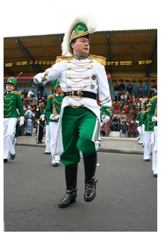

Guía Turística Latacunga
TRADICIÓN, CULTURA Y GASTRONOMÍA
Fiesta de La Mamá Negra
La Mama Negra conocida también como la Fiesta de la Santísima Tragedia es de tradición propia de la ciudad de Latacunga
Se realizan en dos fechas
-
La primera se realiza en Septiembre organizado por las vivanderas de los mercados La Merced y del Salto, en honor a la Virgen de la Merced.
-
La segunda se realiza la primera semana de Noviembre, en la cual los habitantes de la ciudad festejan su independencia

FOTO:. DIEGO PAREDES B.
Personajes de la Mama Negra
• La Mama Negra: Hombre vestido de mujer, personaje principal de la fiesta, vestido con atuendos coloridos y muy vistosos, en cada esquina del recorrido cambia sus pañolones o chalinas. Tiene en su mano derecha a su hija Manuelita Baltazara su hija menor, en su mano izquierda lleva un chisguete con el cual da de comer a su hija y con el cual lanza leche a los turistas distraídos.

FOTO:. IVAN CAICEDO ATIAGA
El Ángel de la Estrella: Vestido de blanco, con alas y corona, lleva en su mano diestra un cetro con una estrella. Recita loas a la virgen de las Mercedes, para proteger el bienestar del desfile. No es un personaje original, sino que forma parte de pasajes bíblicos.

FOTO:. IVAN CAICEDO ATIAGA
El Rey Moro: Identifican a los reyes de Europa en el tiempo colonial. Hombre disfrazado con traje de la época de los moros, el mismo que fue integrado a la comparsa como ente representante de la conquista española.

El Abanderado: Al igual que el capitán utiliza un vestuario militar y posee una bandera multicolor llamada también bandera morisca, va acompañado de un pelotón de soldados y adorna su presentación con batidas de su bandera.

FOTO:. IVAN CAICEDO ATIAGA
El Capitán: Personaje vestido al estilo militar, posee en su mano derecha un sable, va acompañado de un pelotón de soldados (engastadores), los cuales resguardan al personaje durante todo el desfile, prioste mayor de la fiesta y amante de la Mama Negra.

FOTO:. IVAN CAICEDO ATIAGA
<<Anterior